Jenkins World 贡献者峰会及专家答疑展位
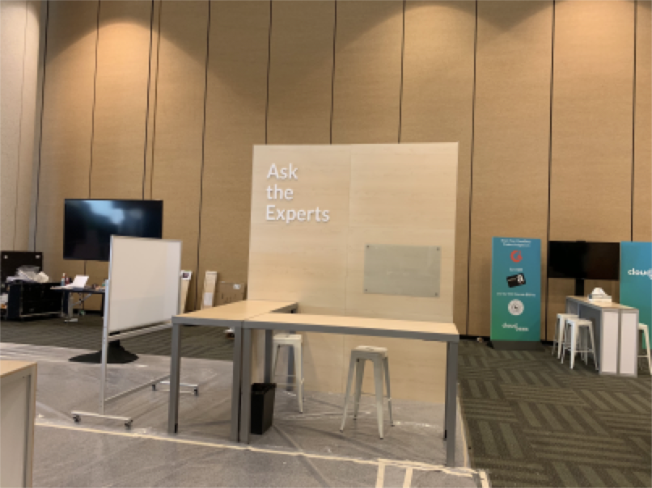
Jenkins 15周岁啦！Jenkins World 将 DevOps 思想领袖、IT 主管、持续交付实践者以及 Jenkins 社区和生态系统齐聚这场全球活动，让与会者有机会学习、探索以及面对面交流，帮助塑造 Jenkins 的下一次发展以及针对 DevOps 的解决方案。
此外，Jenkins 贡献者峰会也于旧金山举行。Jenkins 贡献者峰会是现有贡献者以及未来贡献者围绕 Jenkins 项目，以最新思考和最大努力来共同探讨、学习和协作的地方。上午峰会安排是由核心贡献者进行一系列展示介绍。这些介绍突出了每项工作的内容，以及社区成员可以提供哪些帮助。下午分组讨论会上，与同好小组进行了深入讨论，并同子项目贡献者进行合作。
我非常荣幸能成为其中一员。 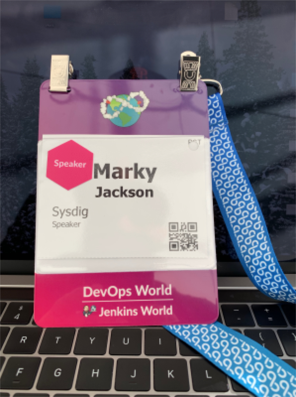
第一天
第一天以贡献者峰会开场。这让大家有机会聚在一起讨论对社区的贡献，把脑海中熟悉的名字和本人对上号。大多数人我只通过视频聊天和在 gitter 上见过，所以当时我特别激动。我们聚在一起了解 Jenkins 开源画卷的起点。
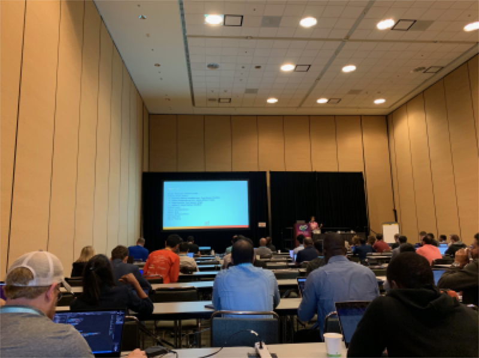
接下来是同好讨论/非正式会议。我主导这些讨论会，个人认为进展十分顺利。成员组织管理员 Martin d’Anjou 和 Jeff Pearce 为我们带来一场有关 Google 编程夏令营（Google Summer of Code，以下简称 GSoC）项目的演讲。
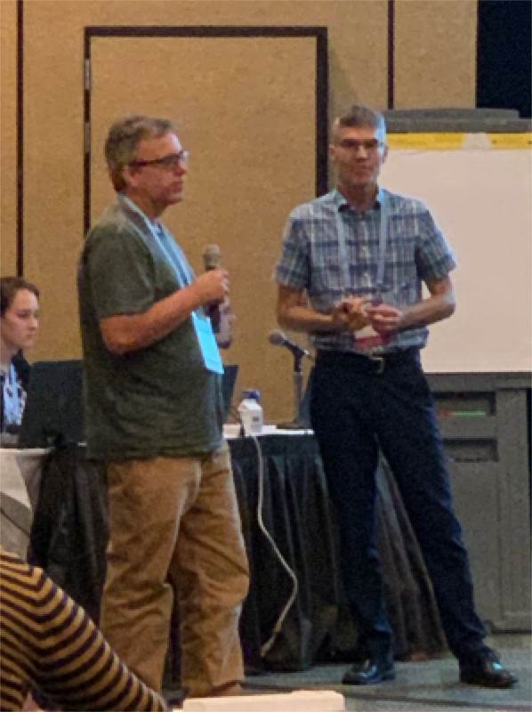
GSoC 学生 Natasha Stopa 介绍了她的项目——Plugin Installation Manager Library/CLI Tool。这是一个超酷的项目，在社区受到广泛欢迎。
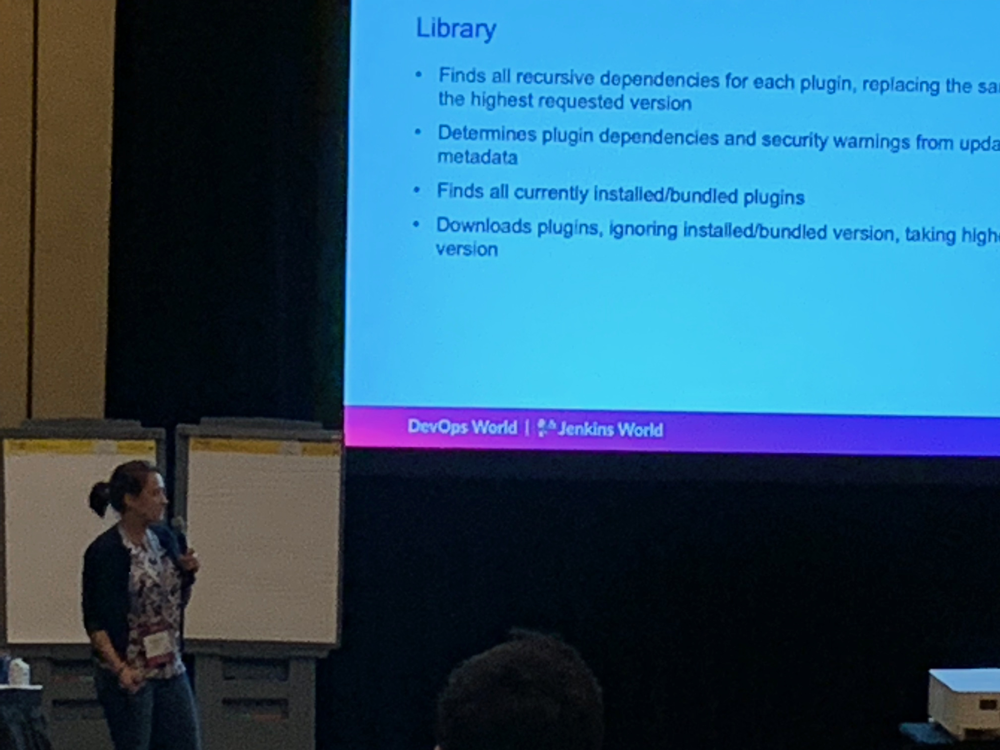
讨论会结尾是博思艾伦咨询公司（Booz Allen Hamilton）的 Steven Terrana 的展示和精彩的 Jenkins 模板引擎。如果你还没有试过这个，请一定不要错过https://github.com/boozallen/jenkins-templating-engine。
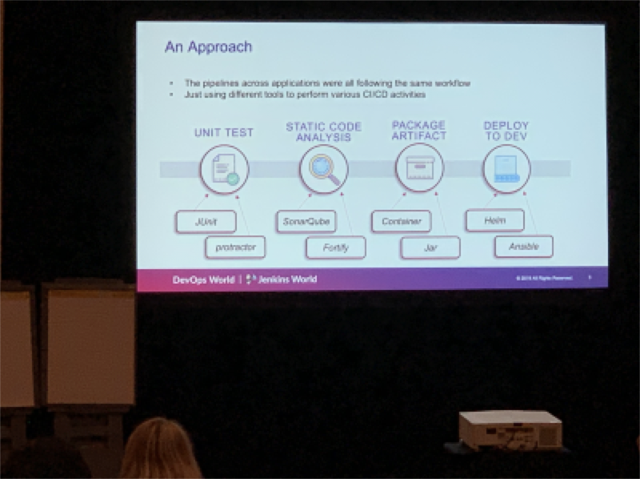
主展厅
从第二天起，我和其他几位 Jenkins 组织管理者将在 Jenkins 社区的专家答疑（Ask the Expert）展位。
这真的是一场非常有意思的体验，让我有机会了解社区正在做什么，帮助他们解决面对的问题。问题涉及的范围很广，从 Jenkins X 到我负责维护的种种插件，如 Jenkins Prometheus 和 Sysdig Secure Scanning 插件。也有很多关于 Kubernetes 的问题。有很多关于 Kubernetes 使用情况提高的市场营销方面的数据，但对 Kubernetes 上 Jenkins 的超高兴趣度真的让我大吃一惊。当然，也有机会拍点儿自拍。
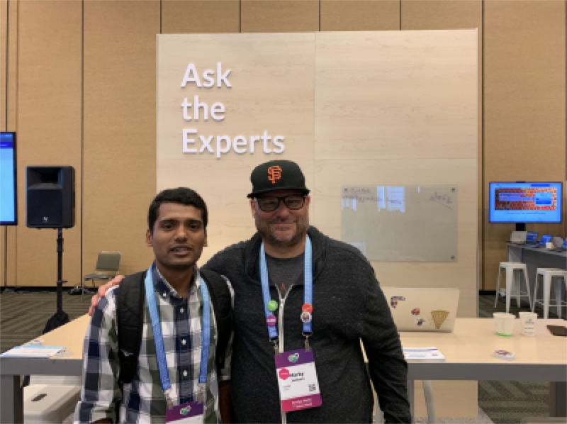
午餐时段的 demo 开始，我们的流程很紧凑。第一个上台的是超棒的 Mark Waite，他来谈谈 Git 插件。很多人在 Jenkins 上用 git。非常感谢 Mark 的分享。
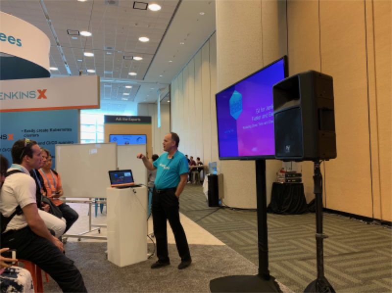
下一位是 Jenkins 组织管理者 Martin d’Anjou，他介绍了 GSoC。让人难以相信的是，GSoC 也和 Jenkins 一样成立15周年了！
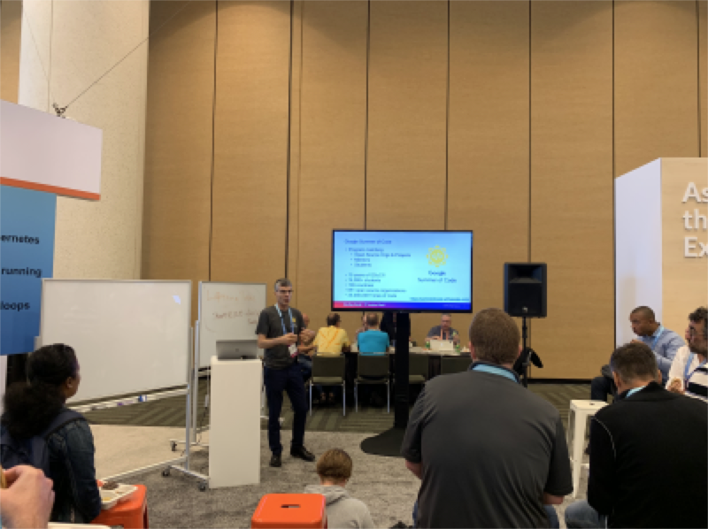
Natasha Stopa 是参与 GSoC 的学生，她介绍了自己的项目 Plugin Installation Manager Library/CLI Tool。Natasha 真的在这个插件上做了很多努力，能在她的展示中看到结果和支持真的是太棒了。
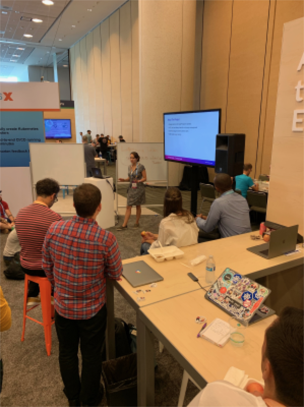
最后压轴的就是我了。我展示了正在维护的 Sysdig Secure Scanning 的 Jenkins 插件。感谢每一位当场的朋友。
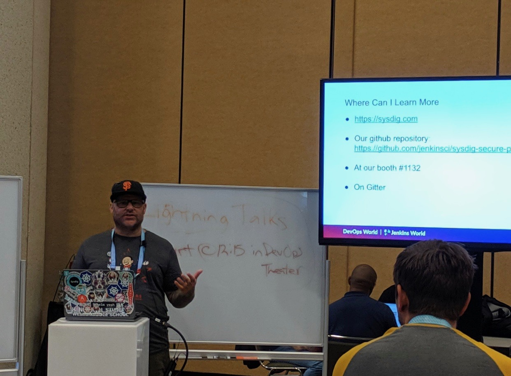
就在午餐 demo 之后，我顺道去看了下 Jenkins 开放区。这对社区而言，是讨论议题、自主活动的机会。我真的非常享受这次讨论会，觉得该形式在与会人员中的接受程度很好。
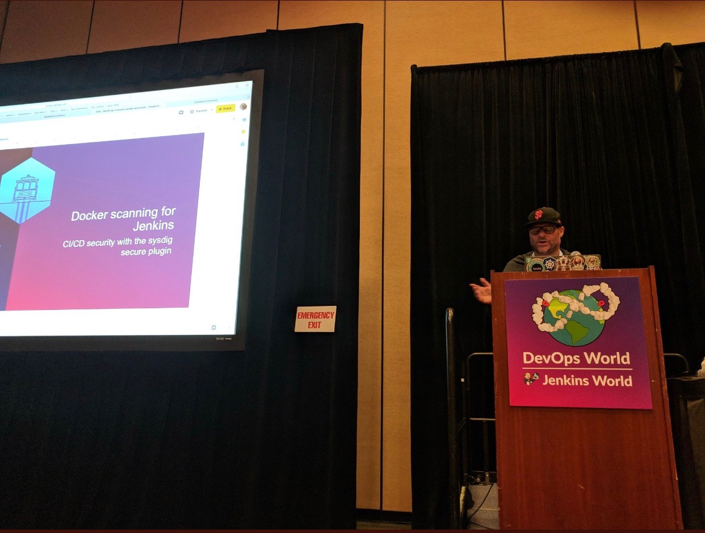
我们以 Jenkins 组织管理员与 GSoC 学生的合照作为当天活动的结尾。未参与合照的组织管理员为 Lloyd Chang 和 Oleg Nenashev。
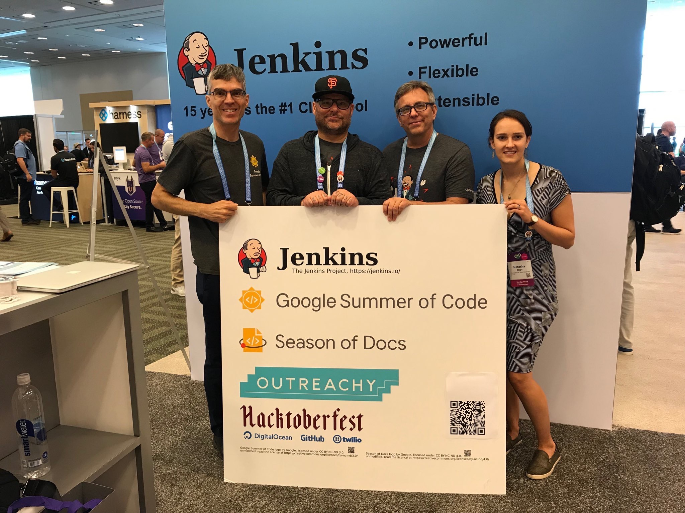
结语
这是一场无与伦比的非凡体验。非常感谢 CloudBees、Jenkins 社区、GSoC、Tracy Miranda、Alyssa Tong 和我的公司 Sysdig。
想到 Jenkins 成立15周年，真是太了不起了！我们完成了那么多事情，未来也格外灿烂。非常感谢让我有幸为社区服务，成为社区的一部分。未来还有更多个15年！
如果你有兴趣加入 Jenkins 的任何特别兴趣小组（SIG），请查看以下链接。我们需要您的帮助：(https://jenkins.io/sigs/)
如果你有兴趣参加编程夏令营，请看此处：(https://jenkins.io/projects/gsoc/) 如果你想和大家聊天讨论，可以在这找到我们：(https://jenkins.io/chat/) 如果你想给我们发邮件,请发送至:(https://jenkins.io/mailing-lists/)
现场照片
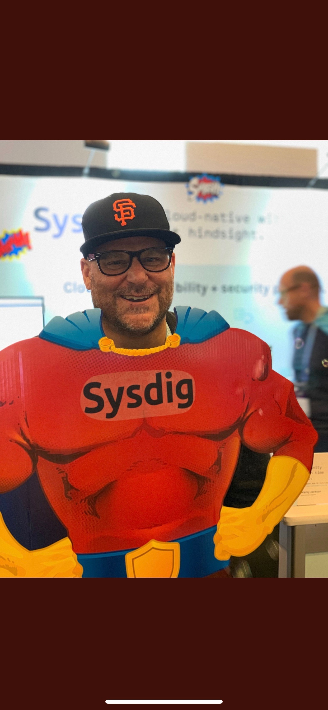 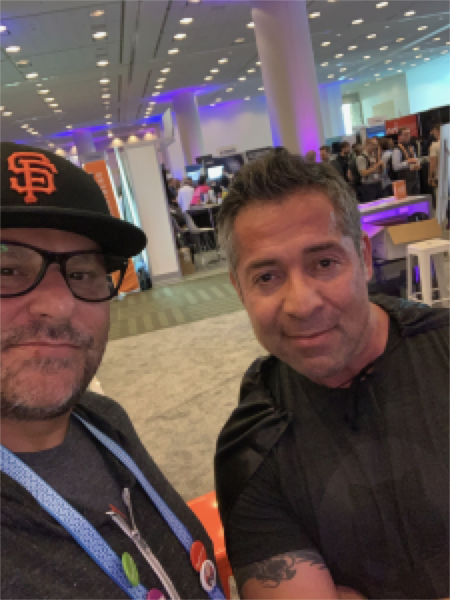 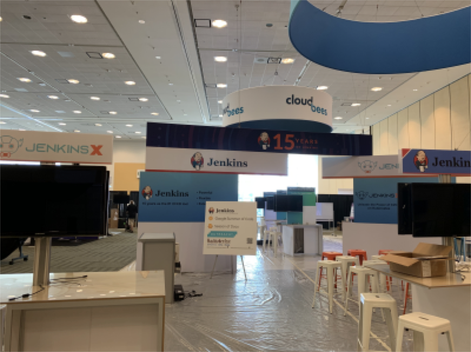
关于作者
Marky Jackson (https://jenkins.io/blog/authors/markyjackson-taulia/)
该作者没有设置个人简介，请参阅下方社交媒体链接。 GitHub(https://github.com/markyjackson-taulia)